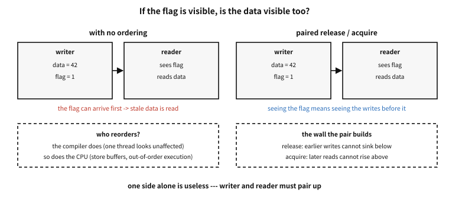

85 Operations that do not split — <stdatomic.h>
What to know first
Looking back
Chapter 13 said the CPU does several things in one beat and even executes out of order, and chapter 12 said each core carries its own cache. Then if two strands increase the same variable by 1 at once — is the result 2?
A. It may not be. x = x + 1 is not one step to the machine but three (read, add, write), and if two strands interleave these three steps they read the same value and write the same value — one increment vanishes whole. On top of that, caches differ per core, so the lag of “written but not visible to the other” is compounded. This chapter’s first example actually counts that loss out.
The need for this chapter, and its context
By the end of this chapter
volatile is not the answer, and when to touch and when to leave alone the difficult handle called the memory order.The questions this chapter answers
- What differs between
compare_exchange’s strong and weak? Why is there a separate edition that “fails in vain”?
85.1 The lost update — confirmed with the eyes
examples-en/ch80/atomic.c
/* A race condition and an atomic operation — the same work counted twice. */
#include <stdatomic.h>
#include <stdio.h>
#include <threads.h>
#define THREADS 4
#define BUMPS 200000
static long plain; /* a plain long — unprotected */
static atomic_long safe; /* an atomic long */
static int worker(void *unused)
{
(void)unused;
for (int i = 0; i < BUMPS; i++) {
plain = plain + 1; /* read-add-write: it comes apart */
atomic_fetch_add(&safe, 1); /* it happens as one lump */
}
return 0;
}
int main(void)
{
thrd_t t[THREADS];
for (int i = 0; i < THREADS; i++)
thrd_create(&t[i], worker, NULL);
for (int i = 0; i < THREADS; i++)
thrd_join(t[i], NULL);
long expected = (long)THREADS * BUMPS;
printf("expected : %ld\n", expected);
printf("unprotected: %ld%s\n", plain, plain == expected ? "" : " <- counts were lost");
printf("atomic : %ld\n", (long)safe);
printf("\nis atomic_long lock-free? %s\n",
atomic_is_lock_free(&safe) ? "yes" : "no");
return 0;
}
Output
expected : 800000
unprotected: 282562 <- counts were lost
atomic : 800000
is atomic_long lock-free? yes
Four strands turned the same loop 200,000 times each. The expected value is 800,000, but the unprotected long did not even get near it. The vanished share differs on every run — and this non-determinism is precisely the character of this class of bug. A loss that does not reproduce.
The atomic variable’s side is exactly 800,000 every time. Because atomic_fetch_add performs “read-add-write” as one lump that cannot be split. The name atom means just that — that which is not split further.
A common misconception. “A race condition is a probabilistic performance problem where the value is occasionally off”
Wrong in two layers. First, it is not that the value goes off but that the contract breaks. The standard from C11 onward settles it thus — if two strands touch the same memory at once, at least one of them writing, and it is neither atomic nor ordered, that is a data race and the whole program is undefined behaviour (chapter 54). It means there is no guarantee that it ends at the level of “one value being wrong”.
Second, the compiler optimises on this premise. Assuming there is no race, it puts the variable in a register, and then however much the other side changes the value this loop sees the old value forever. This really is the common identity of the infinite loop that “works in a debug build and hangs in release” (chapter 18′s release-only bug is replayed here).
85.2 Why volatile is not the answer
In code that has long used C one often sees the practice of exchanging signals between strands with volatile int flag;. It is a wrong practice now. What volatile promises is one thing only — the compiler will not remove or merge these accesses. As will be seen in chapter 54, its purpose was hardware registers (places whose value changes from outside).
There are two things volatile does not promise. Atomicity — the x++ of a volatile long x; is still three steps and splits. And ordering and visibility — it does not prevent the CPU from changing the order of writes or from being late to show them to another core.
| not split | visibility between cores | blocks reordering | |
|---|---|---|---|
volatile | no | no | no (against other accesses) |
_Atomic | yes | yes | yes (as much as the chosen order) |
| a mutex | yes (the whole region) | yes | yes |
Table 85.1 — The three things an atomic operation gives
Summed up: volatile for hardware registers, atomic types or mutexes for sharing between strands. Java’s and C#‘s volatile share only the name and differ in meaning (there it really does guarantee visibility), so bringing the habits of those languages into C is a common passage to accidents.
85.3 Atomic types and operations
Using them is simple. Attach _Atomic before the type, or use the names the header gives (atomic_int, atomic_long, atomic_bool, atomic_size_t …).
#include <stdatomic.h>
atomic_int counter = 0; /* = _Atomic int */
_Atomic long total;The operations are called as functions (or macros of those names). Using the ordinary operators (++, +=) also behaves atomically, but the fact of being atomic is not visible in the code and so is easy for a reader to miss, which is why the explicit functions are recommended.
| operation | what it does | where it is used |
|---|---|---|
atomic_load | read | seeing the current value |
atomic_store | write | setting a value |
atomic_fetch_add, _sub | add and return the previous value | counters and statistics |
atomic_fetch_or, _and, _xor | bit manipulation | sets of flags |
atomic_exchange | swap and return the previous value | replacing in place |
atomic_compare_exchange_strong | change only if equal to the expected value (CAS — compare and swap) | lock-free data structures |
atomic_compare_exchange_weak | the same, but it may fail in vain | inside a loop |
atomic_flag_test_and_set | the most primitive test-and-set | spinlocks |
Table 85.2 — The atomic operations and where each fits
That fetch_add returns the previous value is a place often confused. To obtain “which number this is”, use the return value; to know “how much it is now”, it is the return value plus the increment, or a separate atomic_load — and the latter may change again in the meantime.
85.3.1 CAS — “if it is still what I saw, change it”
An operation like fetch_add performs one fixed update. Real updates usually carry a condition: “raise it unless it would pass the limit”, “replace it if it is larger than the current value”, “move to the next state only from this one”. Each of those is three steps — read, decide, write — and someone can cut in between them.
Hence compare-and-swap (CAS). The idea fits in one sentence.
In C it is atomic_compare_exchange_strong (and _weak), with this contract:
bool atomic_compare_exchange_strong(A *object, C *expected, C desired);- If
object’s current value equals*expected— it storesdesiredand returnstrue. - If it differs — it changes nothing and returns
false, but ★ writes the current value into*expected(§7.17.7.4 p3).
That second bullet shapes how the function is used. A failure hands you the fresh value, so there is no need to re-read before trying again — which is why CAS is almost always written as a loop.
int cur = atomic_load(&x);
int next;
do {
next = f(cur); /* any update rule at all */
} while (!atomic_compare_exchange_weak(&x, &cur, next));★ Those five lines are why CAS is the universal tool. Whatever stands in for f — a conditional increment, a maximum, a state-machine transition — that update becomes atomic. Even fetch_add could be built this way; there is simply no reason to, when the hardware offers it directly.
| machine | what it emits | consequence |
|---|---|---|
| x86-64 | lock cmpxchg — one instruction | equal values always succeed |
| RISC-V, the ARM family | a pair: reserve with lr, store conditionally with sc | a lost reservation fails even when the value matched |
Table 85.3 — CAS is realised differently from machine to machine
That second row is precisely the “spurious failure” of the question below. The reservation is held on the location, not the value, so another core touching the same cache line — or a single interrupt — is enough to drop it.
A common misconception. A successful CAS means nobody touched the value in between
It does not. CAS looks at the value, not the history. If you read A, and someone else changed it to B and back to A in the meantime, CAS sees “still the same” and succeeds. This is the ABA problem.
With a numeric counter it is usually harmless. It bites with pointers: the node at that address may have been freed and a new one happened to land at the same address. Lock-free structures therefore attach a generation counter to the value (a tagged pointer) or defer reclamation. ★ This is why this chapter’s advice to not write such structures yourself is meant seriously.
Counter-example. Believing that several atomic operations make their bundle atomic too
if (atomic_load(&count) < LIMIT) /* ① read and */
atomic_fetch_add(&count, 1); /* ② add — somebody cuts in between */If another strand raises the value between ① and ②, the limit is exceeded. Atomicity is a property of one operation, not of a region. To protect a region, bind it with a CAS loop or use a mutex.
int cur = atomic_load(&count);
do {
if (cur >= LIMIT) break; /* limit check and update as one lump */
} while (!atomic_compare_exchange_weak(&count, &cur, cur + 1));That on failure the current value comes back held in cur is the heart of this idiom. So there is no need to read again inside the loop.
Q. What differs between compare_exchange’s strong and weak? Why is there a separate edition that “fails in vain”?
A. Some CPUs (the ARM family and others) implement CAS as a pair of instructions, “reserve and later write conditionally”. If the reservation is broken in between by an interrupt or by cache circumstances, it comes back as a failure even though the value equalled the expectation — that is a spurious failure. weak exposes this failure as it is and in exchange is faster, while strong retries internally to guarantee “failure only when the value differed” and in exchange is a little slower.
The rule is simple. weak inside a loop, strong when trying only once without a loop. Since the loop will turn again anyway, a spurious failure is harmless and only the gain remains.
85.4 Memory order — not touching it is the default
85.4.1 Why “order” is a question at all
Atomicity was “does not split”. Ordering is a different question: do others see things in the order I wrote them?
The answer is no, and there are two culprits.
- The compiler reorders. Looking at one strand alone the result is the same, so it rewrites the sequence into a faster one (the editor of chapter 14).
- The CPU reorders too. It gathers stores in a buffer before letting them out, and runs whichever instruction is ready first (chapter 13).
Neither is ever noticed by a program running alone: it reads back its own writes correctly. The problem shows only when another strand is watching.

Figure 85.1 — If the flag is visible, is the data written before it visible too?
Figure 85.1 is that situation. The writer fills in the data and raises a flag; the reader sees the flag and reads the data. Obvious to a human — yet without ordering the flag may arrive before the data, and the reader takes the “it is ready” signal and reads what was there before.
85.4.2 The pair builds a wall — release and acquire
Hence the pair. The writer raises the flag with release, the reader reads it with acquire.
/* writer */ /* reader */
data = 42; if (atomic_load_explicit(
atomic_store_explicit( &flag, memory_order_acquire)) {
&flag, 1, memory_order_release); use(data); /* guaranteed to be 42 */
}Each word names a direction. release means “the writes before this point cannot sink below it”; acquire means “the reads after this point cannot rise above it”. One side alone achieves nothing — the wall stands only when the two pair up.
★ And what the pair guarantees is not merely the flag. If the flag is visible, then everything written before it is visible too. So the data itself need not be atomic: data above is a plain int.
85.4.3 Is ordering free? — measure it
“The most expensive” invites the question: how expensive? Compiling the same C for two machines makes the answer visible.
| order requested | what x86-64 emits | what RISC-V emits |
|---|---|---|
relaxed | mov — an ordinary store | sw — an ordinary store |
release | mov — identical | a store preceded by fence rw,w |
seq_cst | xchg — a locked operation | fence rw,w before, fence rw,rw after |
Table 85.4 — The same code pays a different price per machine — raising the flag
★ The first two rows are character for character the same on x86, because that machine already keeps that order. Which yields this chapter’s most practical warning: code that wrongly uses relaxed runs perfectly when tested on x86. The same code on RISC-V or ARM runs without the fence and becomes a bug nobody can reproduce.
The third row costs on both machines. That is why the default is safe and dear.
If no order is specified, as in atomic_fetch_add(&x, 1), the strongest order, sequential consistency (memory_order_seq_cst), is used. It means every strand sees the order of atomic operations as one consistent story, and it is the model easiest for a human to reason about. In exchange it is the most expensive.
C provides six orders. We learn their faces from a table — most programs need only the default.
| order | guarantee | where it is used |
|---|---|---|
seq_cst | one order globally | the default. if in doubt, this |
acquire | later accesses cannot rise above it | taking a lock, reads on the consumer side |
release | earlier accesses cannot sink below it | releasing a lock, writes on the producer side |
acq_rel | both, in a read-modify-write operation | state transitions with CAS |
relaxed | atomicity only. no ordering guarantee | pure counters and statistics |
consume | effectively abandoned (implementations raise it to acquire) | not used |
Table 85.5 — The memory orders and what each guarantees
The two most common practical uses are these. First, the producer-consumer flag: fill the data and then raise the flag with release, and the consumer sees the flag with acquire and then reads the data. This pair guarantees “if the flag is visible the data is visible too.” Second, a pure statistics counter: only the final sum need be right and there is no need to order it against other data, so relaxed is exactly the right tool.
Counter-example. Switching to relaxed for performance, just to see
atomic_store_explicit(&ready, 1, memory_order_relaxed); /* the flag */relaxed guarantees only the atomicity of this variable. There is no guarantee that the data filled in beforehand is visible to the other side, so the consumer can see the flag raised and yet read the data from before it was filled. Such code mostly runs fine on x86 and then appears as an unreproducible bug on an ARM device — because the reordering each piece of hardware permits differs.
The rule: when a flag and data form a pair, release/acquire. Until you understand that pair, leave the default as it is. The time lost far exceeds the nanoseconds saved here.
85.5 The phrase “lock-free”
That is what the example’s last line asked with atomic_is_lock_free. If an atomic type is handled by a single CPU instruction it is lock-free, and if not the library uses a hidden lock behind the scenes. On today’s mainstream machines integers of pointer size or smaller are mostly lock-free. Wrap a large struct in _Atomic, on the other hand, and — the syntax passes but — a hidden lock attaches and performance can become unexpectedly bad.
A common misconception. “Atomic operations are always faster than a mutex”
Mostly right when contention is low, but it reverses when contention is heavy. If several cores fight over the same cache line, that line keeps travelling between the cores (chapter 12′s false sharing is replayed here). A CAS loop turns again on every failure, and when contention is heavy this retrying is waste entire — a mutex puts the failing strand to sleep while spinning burns a core.
And writing lock-free data structures yourself is a task of another order of difficulty. The ABA problem (a value going from A to B and back to A, fooling the CAS), when memory may be reclaimed, progress guarantees — these are topics for a paper each. The right answer in the field is usually this: atomic types for counters and flags, a verified library or a mutex for data structures.
85.6 Where to use it and where not to
| situation | recommended tool | reason |
|---|---|---|
| statistics counters | atomic_fetch_add (relaxed) | no ordering is needed |
| a shutdown-request flag | atomic_bool + release/acquire | it pairs with data |
| initialising exactly once | call_once (<threads.h>) or CAS | do not write double-checked locking by hand |
| invariants over several values | a mutex | atomicity is per single variable |
| sharing a large struct | a mutex | an _Atomic struct means a hidden lock |
| sharing with a signal handler | sig_atomic_t or a lock-free atomic type | chapter 80′s restrictions |
| hardware registers | volatile | it is not sharing between strands |
Table 85.6 — The concurrency tool recommended, by situation
In practice. Why C11 brought in a memory model
In the standard before C11 there was no concept at all of there being several strands. Threads were the business of a library (POSIX threads and the like), and the language defined optimisation on the premise that “a program flows in one stream”. In that gap questions piled up which nobody could answer exactly — must the compiler assume another strand sees this write, is this reordering legal, is this mutex-less code wrong.
Around 2004 Java tidied up its memory model first, and C++11 and C11 continued that current by introducing a memory model at the level of the language. What entered then was the definition of a data race, atomic types, and the six memory orders. That we can today say in one line “a data race is undefined behaviour” is thanks to that tidying — before it there was not even a language in which to write that sentence.
Recap
| to remember | the point |
|---|---|
| data race | not slowness but outside the contract. optimisation changes the code |
volatile | not a tool for sharing between strands. it is for hardware |
| the default order | seq_cst. leaving it as it is is mostly the right answer |
fetch_add | it returns the previous value |
| two operations | bundling them is not atomic — a CAS loop or a mutex |
weak/strong | weak if inside a loop |
| lock-free | mostly yes for small integers. a hidden lock for large structs |
| data structures | do not write them yourself |
Table 85.7 — Atomics — what to remember
85.7 When the holder stops — priority inversion and spinlocks
Where atomic operations are not the answer, a lock is. And a lock carries a danger of a different kind from atomicity: the holder being unable to make progress.
=== Priority inversion — the low blocks the high
Take three tasks: urgent (high priority), ordinary (medium), idle (low).
- The idle task takes a lock.
- The urgent task wakes and asks for the same lock — it blocks. So far, normal.
- Then the ordinary task wakes and pushes the idle task aside, being higher.
- Now the idle task cannot run, cannot release the lock, and the urgent task stays blocked.
The outcome is upside down: the urgent task has effectively been beaten by the ordinary one. This is priority inversion. Nothing is wrong with the lock and nothing about atomicity broke — two rules, priorities and locking, met and undid each other.
The cure is to lift the holder. Priority inheritance raises the lock holder to the priority of whoever is blocked on it, so the middle task cannot push it aside and the holder finishes and releases quickly.
In practice. The spacecraft that kept rebooting on Mars
Pathfinder landed on Mars in 1997 and, a few days in, began resetting itself over and over, losing data each time.
The cause was exactly the picture above. A low-priority task gathering weather data held the information bus semaphore; a medium-priority task cut in and pushed it aside; the very high priority bus management task stayed blocked meanwhile; and a watchdog timer, seeing that the bus task had not run for too long, restarted the whole system.
★ The lock supported priority inheritance, but it had been turned off for performance. Engineers reproduced the reset on an identical machine on the ground after days of trying, found it in a trace, and uploaded a short program to Mars that flipped that one flag.
Two lessons. Know what the safety device you switched off for performance was holding back. And a bug that will not reproduce leaves you only traces — there is no attaching a debugger at eighty million kilometres.
85.7.1 The same illness, another face — spinlocks in user space
A spinlock waits by spinning rather than sleeping. When the critical section is very short this wins, because sleeping and waking costs more. That calculation rests on one assumption: the holder will not be taken off the CPU in the meantime.
Inside a kernel that assumption can be enforced — switch preemption off for a moment. User space has no such device. If the scheduler takes the holder away, every waiter burns CPU making no progress. The root is the same as priority inversion: the holder stopped.
In practice. Taking a page fault while holding a spinlock
In April 2026 a report reached the Linux kernel list: PostgreSQL throughput had halved on the 7.0 development kernel (pgbench, 1024 clients, a 96-vCPU machine, 0.51x). The profile said 55% of CPU time was spent in a user-space spinlock, and a change in the kernel’s preemption model was blamed.
★ Digging further, the real cause was not the spinlock. It was a page fault taken while the spinlock was held. Backing a shared buffer pool of over 100 GB with 4 KiB pages means a fault on every first touch, and for the length of that trip into the kernel the lock stays taken. Switching to huge pages made the regression disappear on the same hardware.
Three things to take away.
- Do nothing unbounded inside a critical section — and note that a page fault is unbounded and invisible in the source. The line
buf[i] = xcan be a trip into the kernel. It is the same reason a signal handler may do so little. - A spinlock stands on an assumption. When the outside circumstance that upheld it changes, it collapses quietly.
- ★ Where the profiler points is not the cause. The time burned in the spinlock; the fix was in the memory settings.
(Still unfolding as of August 2026. Rather than revert, the kernel side proposed a new mechanism: user space telling the kernel “I am in a short critical section, give me a moment longer”.)
We have seen operations that do not split. The next chapter is a tool in the opposite direction — C23′s checked arithmetic, which asks according to the contract whether an operation overflowed its vessel.
Notes
- If the value I read is still there, change it. Otherwise change nothing and tell me. ↩